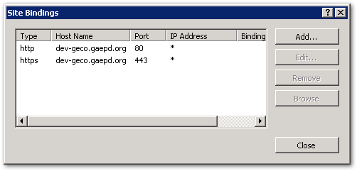

Using HTTPS Is Required
All Georgia EPD websites and web applications MUST be served over HTTPS only (including dev and test sites).
Summary: An SSL certificate for *.gaepd.org is installed on all web servers. The URL Rewrite IIS module is also installed, making it easy to set up redirection for HTTP requests.
Why use HTTPS?
HTTPS helps protect the privacy and security of your users, even if personal information is not being transmitted. Also, HTTPS is required for many newer technologies (e.g., service workers, geo-location).
Every unencrypted HTTP request reveals information about a user’s behavior, and the interception and tracking of unencrypted browsing has become commonplace. Today, there is no such thing as non-sensitive web traffic, and public services should not depend on the benevolence of network operators.
This is especially true for government websites.
Citizens expect government websites to be secure, trustworthy, and reliable. Citizens expect anything they read on a
.govwebsite to be official, and they expect any information they submit to that website — especially if they’re submitting personal information — to be sent safely and only to the government.
This policy applies to Dev and Test sites as well since those sites often still require the use of passwords and often display data copied from the production site. Plus, if you aren’t testing under the same conditions that exist in Production, you aren’t testing everything.
How to enable HTTPS for your website
In IIS Manager, select your site and then select “Bindings…” under the Edit Site Actions. Add a new binding, choose “https” for the type, select the "*.gaepd.org" SSL certificate, and enter the host name.

Each website should have two bindings, one each for HTTP and HTTPS. (The HTTP binding is required so that you can enable redirection.)

Important note: The SSL certificate has a wildcard sub-domain, but be aware that this only works for a single sub-domain segment. A sub-sub-domain (like https://dev.geco.gaepd.org) will not work correctly. Therefore, when creating URLs for test sites, use a hyphenated subdomain (e.g., https://dev-geco.gaepd.org).
Another important note: The SSL certificate installed does not work for domains other than gaepd.org. If you need to use a different domain name, include the purchase and maintenance of a separate SSL certificate in your development costs.
Ensure your site works correctly
In particular, watch out for hard-coded internal links and mixed security content. Mixed security content occurs when embedded scripts, images, etc. are served from HTTP while the main page is served over HTTPS. See What Is Mixed Content? for a more detailed description.
To fix this, search for all instances of http: in your source code, verify that an HTTPS version is available for the resource, and then change the link.
Also, when linking to external sites, it is best practice to link to an HTTPS version if one exists.
Redirect HTTP requests
- HTTP requests to websites should be seamlessly redirected to an identical request over HTTPS.
- Web APIs should either not listen on HTTP or close the connection with status code 400 (Bad Request).
Once you have verified that the site is fully functional in HTTPS, the next step is to permanently redirect all HTTP traffic to the HTTPS site. The URL Redirect Module has been installed on all web servers for this purpose. To enable it, copy this snippet into your web.config file within the <system.webServer> element:
<rewrite>
<!-- This section requires the URL Rewrite module to be installed in IIS. -->
<rules>
<rule name="HTTP to HTTPS redirect" stopProcessing="true">
<match url="(.*)" />
<conditions>
<add input="{SERVER_PORT_SECURE}" pattern="^0$" />
</conditions>
<action type="Redirect" redirectType="Permanent"
url="https://{HTTP_HOST}/{R:1}" />
</rule>
</rules>
</rewrite>This snippet uses a permanent redirect type (301 Moved Permanently).
Don’t forget the cookies
Browser cookies set by your application should be similarly secured. While you have web.config open, add this line within the <system.web> element:
How to enable HSTS
Once you’ve switched to HTTPS and thoroughly tested your site, you should enable HTTP Strict Transport Security (HSTS).
[HSTS] allows a website to declare itself as a secure host and to inform browsers that it should be contacted only through HTTPS connections. HSTS is an opt-in security enhancement that enforces HTTPS and significantly reduces the ability of man-in-the-middle type attacks to intercept requests and responses between servers and clients.
— IIS 10.0 Version 1709 HTTP Strict Transport Security (HSTS) Support
HSTS is nothing more than a Strict-Transport-Security header included with the HTTP response, with a max-age value indicating the time in seconds that the browser should cache this setting:
Strict-Transport-Security: max-age=<expire-time>The above document describes multiple ways HSTS can be enabled at the server level. The following method is valid for our current version of IIS. Within the <rewrite> element added above, include the following lines and test thoroughly:
<outboundRules>
<rule name="Add STS header when HTTPS" enabled="true">
<match serverVariable="RESPONSE_Strict_Transport_Security"
pattern=".*" />
<conditions>
<add input="{HTTPS}" pattern="on" ignoreCase="true" />
</conditions>
<action type="Rewrite" value="max-age=300" />
</rule>
</outboundRules>The max-age value is set in this example at 5 minutes (300 seconds). It is recommended to ramp up the max-age value stepwise from 5 minutes to 1 week, then 1 month, and finally 2 years, fully testing each step for the enabled time period.
| Duration | HSTS value |
|---|---|
| 5 minutes | max-age=300 |
| 1 week | max-age=604800 |
| 1 month | max-age=2592000 |
| 2 years | max-age=63072000 |
I’ve created a page to track HSTS implementation status that can be used if desired.
Quick check
You can quickly check that the above changes have taken effect using curl.exe. Run curl -I <url> for both the HTTP and HTTPS versions of your URL and look for the correct headers highlighted below. (This is not a replacement for fully testing in a browser.)
curl -I http://<subdomain>.gaepd.orgshould return the headerHTTP/1.1 301 Moved Permanently.curl -I https://<subdomain>.gaepd.orgshould returnHTTP/2 200 OKand (if you have enabled HSTS)Strict-Transport-Security: max-age=604800(max-age value should match the value inweb.config).